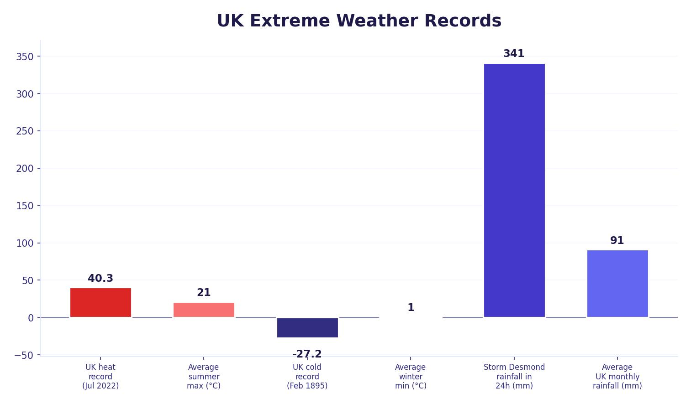

UK Extreme Weather
Although the UK has a moderate temperate climate, it still experiences extreme weather events. These are weather conditions that are significantly different from the usual patterns, including heatwaves, cold snaps, heavy rainfall, thunderstorms, drought and heavy snowfall. Evidence suggests that extreme weather events are becoming more common in the UK.
Air Masses and UK Weather
The UK’s weather is influenced by air masses — large bodies of air that bring different weather depending on where they come from:
- South-west (Atlantic) — the prevailing wind direction. Warm, moist air from the Atlantic Ocean brings low pressure, wind and heavy rain. This is the most common cause of UK flooding.
- North — cold air from the Arctic brings snow and freezing temperatures.
- South — warm air from Africa and southern Europe brings heatwaves and drought.
- East — dry continental air from mainland Europe brings very cold winters (cold snaps) and hot, dry summers.
The UK sits near the boundary of the Hadley and Ferrel cells, where warm air rises creating low pressure. This is why the UK gets so much rain and unsettled weather, especially on the western coast which faces the prevailing south-westerly winds from the Atlantic.

Types of UK Extreme Weather
The main types of extreme weather experienced in the UK are:
- Heatwaves — unusually high temperatures above 30°C, causing health risks especially for the elderly.
- Cold snaps — unusually low temperatures below freezing, causing disruption to transport and schools.
- Flooding — extreme amounts of rainfall that rivers cannot cope with.
- Thunderstorms — heavy rain, lightning and sometimes hail.
- Drought — prolonged periods without rain, causing water shortages.
- Heavy snowfall — caused when warm air meets freezing cold air.
Case Study: Cockermouth Floods (November 2009)
In November 2009, the town of Cockermouth in Cumbria, north-west England, experienced severe flooding. It was one of the worst flood events in UK history.
A combination of factors caused the flood:
- A warm air mass crossing the Atlantic picked up large amounts of moisture from the ocean.
- This air was forced upwards over the hills of Cumbria, where it cooled and condensed, producing relief rainfall.
- Up to 314 mm of rain fell in just 24 hours on 18th November 2009 — a UK record at the time.
- The ground was already saturated from weeks of previous heavy rain, and the underlying rock was impermeable, so water ran straight off the hillsides into the rivers.
- The rivers Derwent and Cocker filled rapidly as water ran down the steep mountain slopes. The two rivers meet at a confluence in Cockermouth, doubling the volume of water.
- The rivers were already high from previous rainfall and quickly burst their banks, flooding the town.
Social Effects
- 1 police officer killed — PC Bill Barker died when a bridge collapsed as he was directing traffic away from it.
- 1,300 homes flooded — residents had to be housed in hotels and B&Bs, often far from their community and workplace.
- Residents suffered significant emotional distress from losing possessions, homes and community connections.
Economic Effects
- Total insurance cost of £275 million.
- £100 million cost to the local economy from damaged businesses and lost trade.
- 16 bridges damaged (4 completely destroyed) and 25 roads closed, forcing diversions of up to 40 miles for people trying to get to work.
Environmental Effects
- River banks were heavily eroded by the fast-moving floodwater.
- Sewage contamination polluted the floodwater, posing a health risk — anything touched by the water had to be destroyed.
- Trees were destroyed and severe landslides occurred along the River Derwent.
Immediate Responses
- 200 people were airlifted from rooftops by RAF helicopters.
- Others were rescued by boats from flooded streets.
- Evacuees were taken to temporary shelters.
- Buildings were assessed for structural safety before residents could return.
- The flooding happened so rapidly that many people had no time to respond and needed rescuing.
Long-Term Responses
The total damage cost was £276.5 million, broken down as: businesses and local economy (£129.2m), property (£98.3m), roads and bridges (£34m), and health and welfare (£12.9m). The government provided £100 million, with the rest covered by insurance.
- The main bridge over the River Derwent was closed for two months for safety checks and repairs.
- Town centre roads were resurfaced after being broken up by floodwaters.
- The rivers were dredged to remove sediment and debris, increasing the river’s capacity to reduce future flooding.
- Flood walls were built to keep water within the river channel.
- New embankments (earth banks) were installed as a greener alternative to concrete walls.
- Flood gates and barriers were installed that could be closed quickly when flooding threatened.
- The Environment Agency improved its flood warning system, using social media (Twitter, Facebook) to provide real-time advice.
- The total flood defence scheme cost £4.5 million.
Many residents did not return to their homes for over a year because of the extent of the damage. Flood-contaminated homes needed completely new flooring, furniture, wiring and plaster before they were safe to live in again.